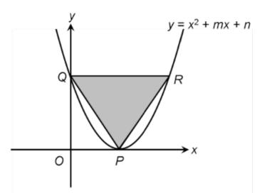

The discriminant of a quadratic equation Δ = b² − 4ac is not only useful for finding unknown values; with the aid of completing the square, it can also prove that a statement or equation always holds true for all real values.
Express and simplify the discriminant.
Completing the square for the discriminant to find max/min values.
Comparing values to complete the proof.
Type 1 — Proof of Statements Always Hold True
Example 1
For the equation x² + ax + (a − 2) = 0, prove that it has 2 distinct real roots for any real values of a.
∴ For any real number a, the equation has 2 distinct real roots.
★ Complete the square if the expression of Δ is not a perfect square. Then, you will notice that the minimum value of the expression is 4.
Graph Example
Example 2
The figure shows the graph of y = x² + mx + n, where m < 0. The graph touches the x-axis at the point P, and it cuts the y-axis at the point Q. QR is a horizontal line.

Graph of y = x² + mx + n, touching the x-axis at P and cutting the y-axis at Q. QR is horizontal.
Make use of the information given: "touch the x-axis" to deduce the relationship between unknowns.
(a) Express n in terms of m.
Δ = 0m² − 4(1)(n) = 0n = m²/4
(b) Find, in terms of m, the coordinates of P, Q and R.
By substituting n = m²/4 into y = x² + mx + n, we have y = x² + mx + m²/4.
When y = 0, x² + mx + m²/4 = 0(x + m/2)² = 0x = −m/2
The coordinates of P are (−m/2, 0).
When x = 0, y = (0)² + m(0) + m²/4 = m²/4
The coordinates of Q are (0, m²/4).
When y = m²/4, m²/4 = x² + mx + m²/4x² + mx = 0x = −m or x = 0
The coordinates of R are (−m, m²/4).
(c) Find the values of m and n if the area of ΔPQR is 27 sq units.
Let H be a point on QR such that PH ⊥ QR.
QR = −m − 0 = −m, PH = m²/4
(1/2)(−m)(m²/4) = 27m³ = −216m = −6
By substituting m = −6 into n = m²/4, we have n = (−6)²/4 = 9.